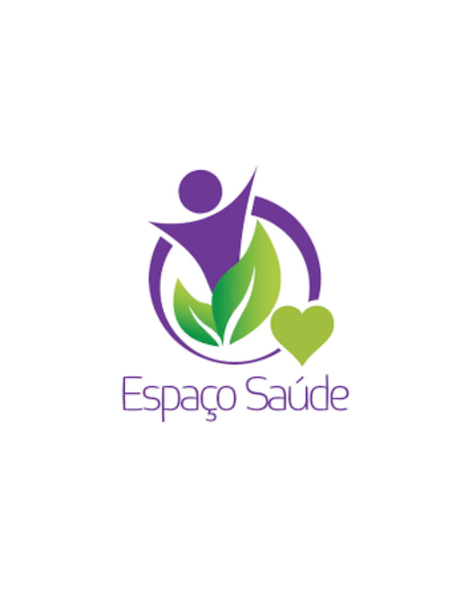
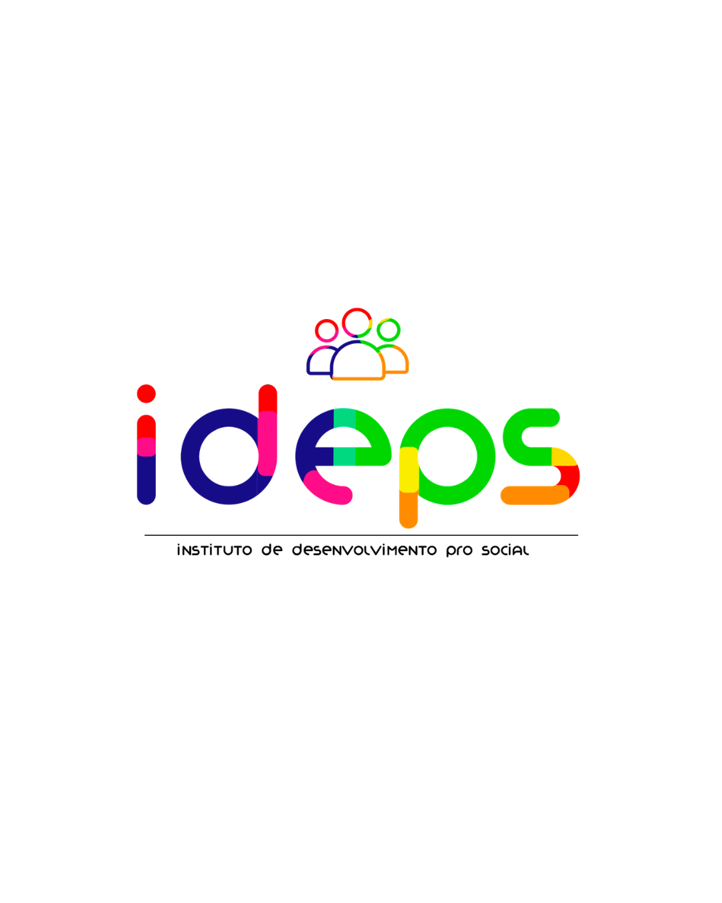

Sistemas de gestão sob medida para distribuidoras e indústrias do Centro-Oeste
Conectamos vendas, estoque e financeiro em uma fonte única de verdade. A partir de R$ 3.000, entregue em 4 a 16 semanas com time local em Campo Grande/MS.
Se a operação ainda roda em planilhas paralelas, alguma coisa está errada
Vendas registra uma coisa, estoque mostra outra, financeiro descobre a diferença só no fechamento do mês.
Sistemas que não conversam entre si geram retrabalho diário e decisões tomadas com base em dados desatualizados.
Horas por mês consolidando planilhas à mão que deveriam estar prontas automaticamente — tempo que a sua equipe poderia usar em outra coisa.
A UP desenvolve o sistema que conecta toda a sua operação — do pedido de venda ao fechamento financeiro — sem depender de adaptações em cima de software genérico.
O que fazemos
Cada projeto começa com diagnóstico. Só então definimos o que faz sentido construir.
ERP sob medida
Seu processo não cabe em sistema genérico. Desenvolvemos módulos de vendas, estoque e financeiro integrados ao seu fluxo. Fechamento mensal em horas, não dias.
Mais informaçõesDesenvolvimento de Software
Precisa de uma funcionalidade que nenhum software pronto oferece. Entregamos em sprints quinzenais com código de sua propriedade. Sem licença mensal, sem dependência de fornecedor.
Mais informaçõesIA Personalizada
Seus dados acumulados não geram inteligência. Implementamos modelos treinados na sua operação: previsão de demanda, detecção de inadimplência, automação de rotinas. Decisões melhores, tempo liberado.
Mais informaçõesConsultoria em TI
Gasto crescente em tecnologia com retorno difícil de medir. Auditamos sua infraestrutura, priorizamos melhorias com impacto real e acompanhamos a implantação. Menos desperdício, mais controle.
Mais informaçõesAssistência de TI Remota
Suporte técnico com hora marcada ou chamado imediato. Resolvemos problemas de software remotamente e visitamos quando o hardware precisa de atenção. Planos mensais fixos sem surpresa.
Mais informaçõesParceiros que confiam no nosso trabalho


Como trabalhamos
Sem surpresa de escopo, sem prazo que desaparece no horizonte.
-
Diagnóstico
Entendemos seu processo atual, gargalos e objetivos em uma reunião gratuita de 60 minutos. Sem pitch de venda — só escuta e perguntas.
-
Escopo detalhado
Documentamos entregas, funcionalidades, prazos e custos. Você aprova e assina antes de qualquer linha de código ser escrita. Nada muda sem seu aval.
-
Desenvolvimento em sprints
Ciclos de duas semanas com demonstrações reais do que foi construído. Você vê o progresso antes de pagar pela próxima etapa — nunca um cheque em branco.
-
Homologação
Testamos junto com a sua equipe no ambiente de produção. Só finalizamos e emitimos a nota da última parcela quando você aprova o que foi entregue.
-
Suporte e evolução
Acompanhamento pós-entrega com SLA definido em contrato. O sistema é de sua propriedade — e estamos aqui para evoluí-lo conforme o negócio cresce.
Perguntas frequentes
Quanto tempo demora um projeto típico?
De 4 a 16 semanas, dependendo da complexidade. Módulos isolados — como um sistema de pedidos ou controle de estoque — ficam prontos em 4 a 8 semanas. Sistemas completos com múltiplas integrações e automações levam de 12 a 16 semanas. O prazo exato é definido e documentado no escopo antes de começarmos.
Como é o modelo de cobrança?
Cobramos por projeto, com pagamentos atrelados às entregas de cada sprint. Não existe mensalidade obrigatória durante o desenvolvimento. Após a entrega, suporte e novas funcionalidades são acordados separadamente — sem surpresa no bolso.
O trabalho é remoto ou presencial?
As duas coisas, dependendo da fase. O diagnóstico e as demos de sprint funcionam bem por videoconferência. Para projetos em Campo Grande e no Mato Grosso do Sul, oferecemos atendimento presencial nos momentos críticos: levantamento de requisitos e homologação.
O código fica com quem ao final do projeto?
Com você. 100%. Entregamos o código-fonte completo, documentado e sem lock-in. Você pode levar para qualquer outra empresa dar manutenção, se quiser. Não criamos dependência — a relação continua porque faz sentido, não porque você é obrigado.
E se eu precisar mudar o escopo no meio do projeto?
Mudanças acontecem — e lidamos bem com elas. Se o pedido estiver dentro do sprint em andamento, ajustamos sem custo extra. Se for algo maior, abrimos um addendum de escopo com custo e prazo revisados antes de continuar. Nada é executado sem sua aprovação formal.
Como é o suporte depois que o sistema vai ao ar?
Todo projeto inclui 30 dias de suporte pós-entrega sem custo adicional. Depois, oferecemos planos de suporte mensal com SLA contratado — desde atendimento básico por e-mail até chamados prioritários com tempo de resposta de 4 horas em dias úteis.
Agende um diagnóstico gratuito
60 minutos para entender sua operação e identificar onde a tecnologia pode gerar resultado real. Sem pitch, sem compromisso.